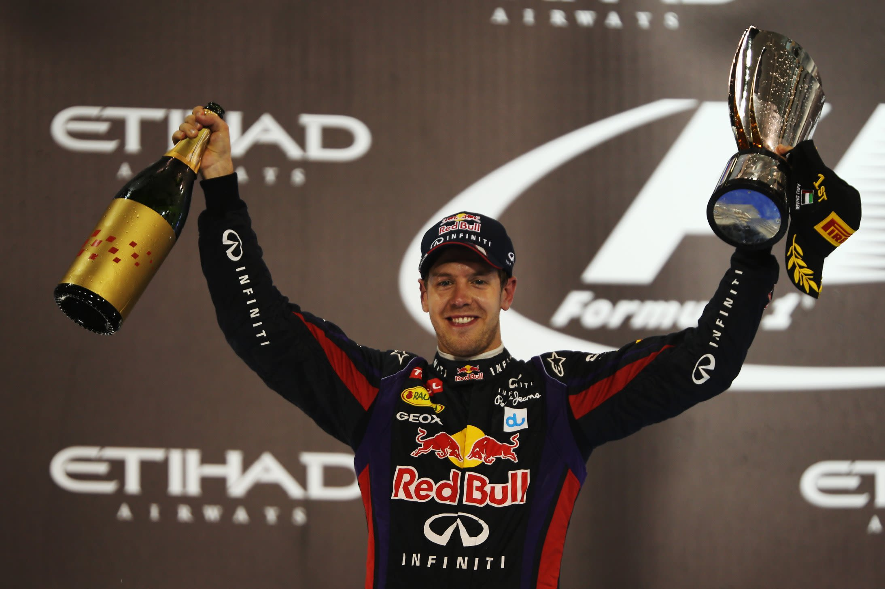

Max Verstappen
Arriving as Formula 1’s youngest ever competitor at just 17 years old, Verstappen pushed his car, his rivals and the sport’s record books to the limit.
The baby-faced Dutchman with the heart of a lion took the Toro Rosso – and then the Red Bull – by the horns with his instinctive racing style.
F1’s youngest points scorer soon became its youngest race winner – at the age of 18 years and 228 days – with an opportunistic but controlled drive on debut for Red Bull in Barcelona 2016.
A true wheel-to-wheel racer, another stunning drive in Brazil from the back of the pack to the podium on a treacherous wet track kept the plaudits coming.
Verstappen’s no-holds-barred attitude and hard defending have sometimes landed him in hot water with his peers and paymasters.
But the mistakes that initially marred his potential have given way to maturity, while the bravado and energy that make him a blockbuster talent have remained – and the victories
have kept on coming. They culminated in his first F1 drivers’ crown after that already legendary, final-round showdown with Lewis Hamilton in 2021.
And he followed that up with a powerhouse title defence in 2022, winning a record 15 races across the season.

Lewis Hamilton
‘Still I Rise’ – these are the words emblazoned across the back of Lewis Hamilton’s helmet and tattooed across his shoulders,
and ever since annihilating expectations with one of the greatest rookie performances in F1 history in 2007, that’s literally all he’s done: risen to the top of the all-time
pole positions list ahead of his hero Ayrton Senna, surged into first place in the wins column surpassing the inimitable Michael Schumacher, and then
matched the legendary German’s seven world titles. Is he the G.O.A.T? Few would deny that he’s in the conversation – and what’s more he’s got there his way,
twinning his relentless speed with a refusal to conform to stereotypes for how a racing driver should think, dress or behave.
Respect is hard earned in F1, but Hamilton – now Sir Lewis Hamilton to be precise – has it from every one of his peers.
Why? Because they know that whatever the track, whatever the conditions, whatever the situation, when his visor goes down and the lights go out, it’s Hammertime.

Sebastian Vettel
The youngest ever world champion's accumulation of age-related records that began in 2010 continued for four consecutive seasons,
culminating in a one-sided 2013 title triumph that confirmed his status as one of the sport’s all-time greats. Sebastian Vettel’s first championship,
at the age of 23, provided a surprise ending to an intensely competitive 2010 campaign. There was surely more to come from this fast rising racer,
and it came quickly when he completely dominated in 2011 to become the youngest double world champion. In 2012, with a series of comebacks from setbacks
against the strongest opposition in the longest ever season, his third driving title in a row was hard-earned and well-deserved. In 2013, and still just 26 years old,
he made short work of becoming the youngest ever quadruple world champion. In truth the precocious youngster who came so far so fast was in a hurry from the time he was a toddler...